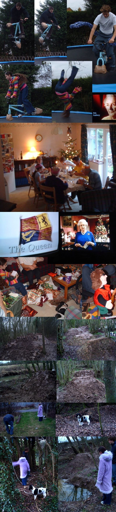

|


|
wednesday, december 31
 went to sebs. did some digging. going to new year party now. no time.
|
|
tuesday, december 30
 this is woof boy. some people call him luke. i know he looks on this website sometimes cos he told me, so i am honoring him with a picture. i hope he signs the book now. yesterday we went to becky's brothers wedding. this picture was taken there. i think woof boy is having a mega fun time. this is woof boy. some people call him luke. i know he looks on this website sometimes cos he told me, so i am honoring him with a picture. i hope he signs the book now. yesterday we went to becky's brothers wedding. this picture was taken there. i think woof boy is having a mega fun time.
as tim said, the trails are flooded. me second will collapse again. he's gone to sebs to dig for now, and then we are going to sam and joe's house tomorrow dressed as pirates. no pictures for about 3 months probably becasue my camera broke. i have no idea what's wrong, it just won't turn on. annoying.
|
|
friday, december 26
wow, boxing day was about as much fun as you can have in the rain. 7 hours digging. we made tim's 5th take off in 2 hours which is good going. and now it's time for the office christmas special. you could almost start to like the winter. look at the other pictures here.

christmas collage. we played on the trampoline, then had dinner, then watched the queen, then took the dog and phebe for a walk to the trails. kind of traditional christmas. it's all quite self explainitry but iguess i need some text while that loads. my sister is 11 and she has no idea what to say to people. we took our grandparents dog for a walk, but it stops to sniff stuff, so you have to keep pulling it, and when we get home she goes and tell them that we were dragging the dog along. she and my mum bought me and tim a little dancing man which you can see below. it's just a bit weird really. one of the pictures of the trails is from a good angle. that's gonna be a good place to film from in the summer. anyway christmas was fun.

|
|
tuesday, december 23
rebekah's shark update:
  this has been a really good few days for shark programmes - one yesterday and sunday; the one yesterday was all about shark bites and showed film of real attacks. bits of skin hanging off and blood and everything. this has been a really good few days for shark programmes - one yesterday and sunday; the one yesterday was all about shark bites and showed film of real attacks. bits of skin hanging off and blood and everything.
 the first programme was about tiger sharks so this is a tiger shark update. they are stripey and eat anything. no-one knows where they give birth. they have the most dangerous bite of any shark as it shears straight through anything. in 1945 a boat sank in world war 2 and 940 men were thrown into the sea. they were there 4 days until they were rescued but only 300 survived the shark attacks. they think the sharks were tiger sharks as so many of the men lost limbs or even the whole of their bottom half. the army had told them the best way to defend themselves from sharks was to kick and scream, but they were wrong. this is a good way to attrack them as they think you are hurt and are prey. so lots of people got eaten. the first programme was about tiger sharks so this is a tiger shark update. they are stripey and eat anything. no-one knows where they give birth. they have the most dangerous bite of any shark as it shears straight through anything. in 1945 a boat sank in world war 2 and 940 men were thrown into the sea. they were there 4 days until they were rescued but only 300 survived the shark attacks. they think the sharks were tiger sharks as so many of the men lost limbs or even the whole of their bottom half. the army had told them the best way to defend themselves from sharks was to kick and scream, but they were wrong. this is a good way to attrack them as they think you are hurt and are prey. so lots of people got eaten.
|
|
monday, december 22
no time for updates, here's how my day breaks down:
07.00: get up etc.
07.30: leave for work
08.00: arrive at work
13.00: skip lunch to get more work done
17.30: leave work (that's 9.5 hours data entry straight)
18.00: home for tea + simpsons
19.00: dig in the frozen darkness
22.00: read email + go to bed.
so you see, no time for playing with webistes.
|
|
thursday, december 18
tims college work: Basic Principles and Comparisons Of Vehicle Transmissions.doc, Task 1-IVA.doc, Task 2-IVA.doc, and Task 3-IVA.doc. if you want to look, right click save as.
 i have a new guestbook, so i gave my old one to seb. please sign mine, and then have a look at what we did to his. it's gruesome. i have a new guestbook, so i gave my old one to seb. please sign mine, and then have a look at what we did to his. it's gruesome.

tim went to playstation and all he go was this lousy photo. well he got some others but not very good ones. a few good videos though. i like videos.
|
|
wednesday, december 17
 no updates for ages cos i have been busy. i have another crappy job but it's only temporary, and i spend all evening digging, so there's no time to play with a website. the trails are more important. maybe something might happen over christmas but i need media. this weekend might just dig or go to burham. no updates for ages cos i have been busy. i have another crappy job but it's only temporary, and i spend all evening digging, so there's no time to play with a website. the trails are more important. maybe something might happen over christmas but i need media. this weekend might just dig or go to burham.
the picture on the left is from black country bmx dot com. it's an amazing site. don't waste time looking here just go. now.
|
|
monday, december 15
i went to sanity. they had cd singles on sale at 49p each. i got
 athlete - westside, athlete - westside,
hot hot heat - no not now,
kings of leon - molly's chambers,
grandaddy - el caminos in the west,
badly drawn boy - all possibilities,
the cooper temple clause - promises promises,
grandaddy - now it's on,
deftones - hexagram,
blur - out of time,
mull historical society - am i wrong,
alfie - people,
the white stripes - i just don't know what to do with myself,
elbow - fallen angel,
the ataris - in this diary,
the all american rejects - swing swing
and something by british sea power.
especially good for cheap christmas presents.
|
|
thursday, december 11
 
these parks look good. sebs great paint job. good work.
the last two updates: harlow, simon's visit
also the pictures and movies pages have new layouts.
a page of radiohead goodies which will be there until my bandwidth collapses.
|
|
wednesday, december 10

 |
i have been working in ashford the last few days. i am doing the washing up in the kitchen of a private school. it's ok cos i get to ride for an hour before work and a few hours afterwards. ashford has a good park, but it's a bit frozen up in the mornings. i take the windscreen scraper to it and then it's ok. it's dry by the time i finish work. you can see on the pictures where i have scraped the ice off. it's chilly.
usually the only properly dry thing is that small quarter at the end. just learning fakies and stuff. i find fakies really hard to get everytime. i am inconsistent. on the other hand i find disasters really easy so that's wierd. the picture on the left is tim trying to balance on this back wheel and then hop back in. he can do it well sometimes. |
  |
ashford is also good because its floodlight so you can ride in the dark, but its so cold that it starts freezing up again by about 5. left - tim on the wall ride.
today i met someone called martin at the park. he lives a few miles up the road from us and has started his own trails so in the spring it's all going to be fun. trails trips. tomorrow is my last day in ashford which is a bit of shame but it's close on the train.
more updates sometime with stuff from the weekend. hope you like the christmas style! i decided today that i don't care if this site goes arty fag and looks good from time to time. usually it looks bad anyway so i don't care. |
look at the lines you could spend all day studying that and work out so many good things. we should build dirt more like this
|
|
thursday, december 4

This update is rebekah's first shark update. Here are some great white shark pictures from the internet. One day I am going to go diving with great white sharks and then I can put photos on that I have taken. Only Ben's camera doesn't work underwater. Have to work on that.
 
This shark is jumping. This will be like me diving.
They are surprisingly good at it actually.

|
|
wednesday, december 3
well today was going to be good. i thought we were getting broadband yesterday but it came today. now it's broken and i can't fix it and the help line are refusing to help me until tomorrow. don't get bt broadband kids. so that means no update until tomorrow i expect. i'll try and get it all done this evening so it can go on in the morning i hope. below is the big line before it was big. it's big now. i'll try and get some pictures later

that's seb and joe being idiots. funny idiots, but still idiots.

|
|